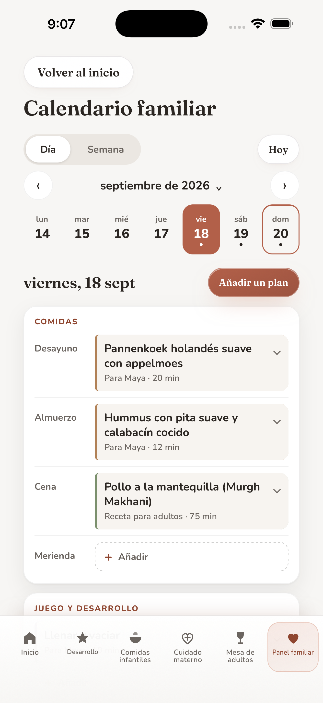

Desarrollo
Ideas de juego, libros y animales reales para explorar con tu hijo.
Más sobre esta sección
- Desarrollo. Ideas breves de juego guiadas por un adulto, orientación para la lectura y animales reales para pasar tiempo juntos.
Encuentra ideas de comidas, juegos y libros según la edad, y Cuidado materno desde el embarazo hasta el primer año después del parto. Reúne las ideas que elijas en tu Calendario familiar.
Para iPhone · En español, inglés y árabe
Se requiere una suscripción después de la configuración.
La App Store muestra la versión actual, y Apple muestra el precio local y el periodo de facturación antes de que confirmes una compra.

Descubre algo para cocinar, un libro para leer o una actividad para probar juntos.
Añade las ideas que elijas a tu calendario, junto con tus notas y compras.
Previsualiza un día, una semana o un mes y elige con quién compartirlo. Los cambios posteriores se quedan en tu dispositivo.
Ideas de juego, libros y animales reales para explorar con tu hijo.

Ideas de comidas según la edad, recetas, alérgenos y Preparación segura donde la sección está disponible.

Información general desde el embarazo hasta el primer año después del parto.

Comidas para adultos, recetas que puedes buscar y listas de compras.
Perfiles, historial de cocina, recordatorios, ajustes, copia de seguridad y restauración en un solo lugar.
Los planes familiares se guardan en este dispositivo. Tú eliges cuándo compartir contenido seleccionado o exportar una copia de seguridad cifrada.
Privacidad. Los datos introducidos por la familia se guardan en el almacenamiento local de la app y no se transmiten automáticamente a My Family World. Una preferencia de configuración de Cuidado materno se guarda en este dispositivo y no se envía a My Family World. Un adulto puede compartir contenido seleccionado o exportar una copia de seguridad cifrada, siempre por decisión propia. En los dispositivos de Apple, la app consulta por separado a Apple los productos y el estado de la suscripción, y se pone en contacto con Apple para las compras y restauraciones; esas comprobaciones no envían a My Family World ningún dato introducido por la familia. En la versión 1.6, los planes del Calendario familiar también se guardan en la app, y las portadas de la lista de Libros se cargan en línea desde Open Library y, en algunos casos, desde servidores de Internet Archive.
Cuidado materno incluye información general, señales de alarma urgentes y enlaces a fuentes oficiales citadas.
No diagnostica, no evalúa síntomas ni sustituye a un profesional de la salud. Las fuentes citadas no han revisado, aprobado ni respaldado la app.
Suscripción. En una instalación nueva, se requiere una suscripción mensual o anual verificada después de la configuración. El plan seleccionado se renueva automáticamente, salvo que lo canceles, y puedes cancelarlo en cualquier momento en los ajustes de tu cuenta de Apple. Si no se pueden cargar los planes o el estado de la suscripción, solo puedes volver a intentarlo o usar Restaurar compras.
Un solo lugar para una madre y su familia: Cuidado materno, Desarrollo, Comidas infantiles, Mesa de adultos y Panel familiar, en inglés, árabe y español. La versión 1.6 añade el Calendario familiar. Esta página también está en inglés y árabe; la Política de privacidad y los Términos y condiciones de uso están solo en inglés y árabe.
Disponibilidad en la App Store: My Family World está disponible en la App Store para iPhone en muchos países y regiones, entre ellos México y otros países de América Latina, España y el resto de la Unión Europea, Estados Unidos, el Reino Unido, Arabia Saudita, los Emiratos Árabes Unidos y los demás países del Golfo, y la India. La versión 1.6.1 está disponible en la App Store.
Escríbenos a msalamissa@alumni.ie.edu para recibir ayuda con la configuración, la suscripción, los recordatorios, la copia de seguridad, el Calendario familiar o cualquier otra función. Indica la versión de la app y lo que intentabas hacer, sin incluir el nombre de ningún niño ni datos de salud privados.